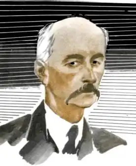
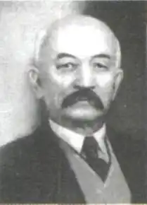

Андрій Чайковський
(1857 — 1935)
Андрій Якович Чайковський народився 15 травня 1857р. в м. Самборі на Львівщині в родині дрібного урядовця. Рано осиротів і виховувався в своїх родичів. Початкову освіту одержав у дяка с. Гордині, закінчив у 1877р. Самбірську гімназію і, відбувши річну військову службу, поступив на філософський факультет, а через рік перейшов на правничий відділ Львівського університету. Працював адвокатом у Львові, потім у Бережанах відкрив адвокатську канцелярію, перед першою світовою війною переїхав до Самбора, а після війни поселився в Коломиї, де й жив до дня смерті 2 червня 1935р. Ще в гімназійні роки Чайковський захопився громадською роботою, був активним членом і навіть головою студентського товариства "Дружній Лихвар", одним із керівників львівської "Просвіти", займався організацією читалень, різних товариств, якими рясніла з кінця XIX ст. Галичина ("Боян", "Надія" тощо). Літературна діяльність письменника розпочалася у 1888р., коли в народовській газеті "Діло" з'явилися його статті про "причини зубожілості наших селян в судівництві" та про біблійні й старогрецькі судові процеси. Сорокарічний ювілей літературної праці А. Чайковського Галичина відзначала у 1928р. Але А. Чайковський почав писати ще в гімназії під впливом прочитаних книжок, писав драми й оповідання, та, як свідчить О. Маковей, через якийсь час із них "сміявся", а далі й зовсім покинув літературне писання "задля недовір'я в себе і невзгодин життя". Можемо твердити, що особливості таланту А. Чайковського вимагали життєвого досвіду, живих фактів дійсності, а для історичних повістей — серйозної історичної лектури, систематичних історичних знань. І він надовго замовк. Важкі обставини особистого сирітського життя, враження від військової служби і походу 1882р. на придушення повстання в Боснії, а далі адвокатська практика, що ввела його в глибини соціального буття народу і тайники його психології, фундаментальне вивчення національної історії, в контексті якої виразніше розкривалося сучасне і майбутнє народу, спонукали серйозно взятися за перо. А. Чайковському було вже під сорок. Андрій Чайковський швидко здобув славу всеукраїнського письменника. Інтелігенції Східної України він був відомий уже в середині 90-х років XIX ст. з галицьких періодичних видань, що все-таки доходили до Києва, Чернігова, Одеси, продираючись крізь рогатки царської цензури. У березневій книзі журналу "Літературно-науковий вісник", що постав замість народовської "Зорі" та Франкового журналу "Житє і слово" і почав у 1898р. виходити як загальноукраїнський літературно-художній і громадсько-політичний журнал, було надруковано розлогу "літературно-критичну студію" Осипа Маковея "Андрій Чайковський". Тритомна антологія "Вік" (1902) представила українським читачам Наддніпрянщини Андрія Чайковського біо-бібліографічними відомостями про нього і уривком із повісті "Олюнька". Відтоді він стає справді всеукраїнським письменником, знаним в Австро-Угорщині й Росії. Письменник глибоко знав сучасне йому селянське життя, на цю тему написав низку творів, що з'являлися окремими виданнями — "Образ гонору" (1895), "Бразілійський гаразд" (1896), "Не піддайся біді" (1908), "Не було виходу" (1927). Життя галицької інтелігенції постає з багато в чому автобіографічної повісті "Своїми силами" (1902). Це твір про "шестидесятників" і "семидесятників" минулого століття на Галичині. Про інтелігенцію йдеться і в тритомній повісті "З ласки родини" (1910) та в повісті "Панич" (1926). Велику популярність принесли письменникові твори з життя так званої "ходачкової" шляхти. Уже перші твори цього тематичного циклу "Олюнька" (1895) та "В чужім гнізді" (1896) викликали як схвальні відгуки Франка, Маковея, так і серйозну розмову про шляхи розвитку письменницького таланту А. Чайковського. Заохочений до праці увагою Франка і Маковея, підбадьорюючими похвалами й порадами, А. Чайковський виявляє дивовижну творчу активність. Тільки з життя "ходачкової шляхти" він створив дві великі трилогії ("Олюнька" — 1895, "В чужім гнізді" — 1896, "Малолітній" — 1919, "Своїми силами" — 1902, "З ласки родини" — 1910, "Панич" — 1921). Один за одним з'являлися в світ твори, написані на матеріалі історії козаччини: "Козацька помста" (1910), "Віддячився" (1913), "За сестрою" (1914), "На уходах" (1921), "З татарської неволі" (1921), "Олексій Корнієнко", ч. І—ІІІ (1926 — 1929), "Украдений син" (1930), "Сонце заходить" (1930), "Богданко" (1934), "Полковник Михайло Кричевський" (1935) та багато інших. Не тільки твори селянської тематики, повісті про інтелігенцію і з життя "ходачкової шляхти", а й численні твори на історичну тематику були підготовчою роботою до написання історичного роману "Сагайдачний". Було написано ще кілька творів і після "Сагайдачного", але вони вже значно поступаються і за художністю, і за освітньо-громадською значимістю, хіба що додають відомостей про джерела історичної прози письменника. Трапилося так, що після об'єднання західноукраїнських земель із Радянською Україною один із найпопулярніших письменників, історичними творами якого зачитувалась уся українська громадськість, був надовго забутий. Тільки в 1958р. після тривалої перерви львівське видавництво "Каменяр" видало збірку творів А. Чайковського "За сестрою" з післямовою Ю. Мельничука, який багато зробив не тільки для повернення письменника в читацький обіг, а й для повернення до нормального життя його родини, викинутої безправністю за межу Європи і Азії. У 1966р. "Каменяр" здійснив ще одне видання творів під назвою "Олюнька". І лише через 23 роки відбулася нова зустріч українського читача з письменником — із його "Сагайдачним".